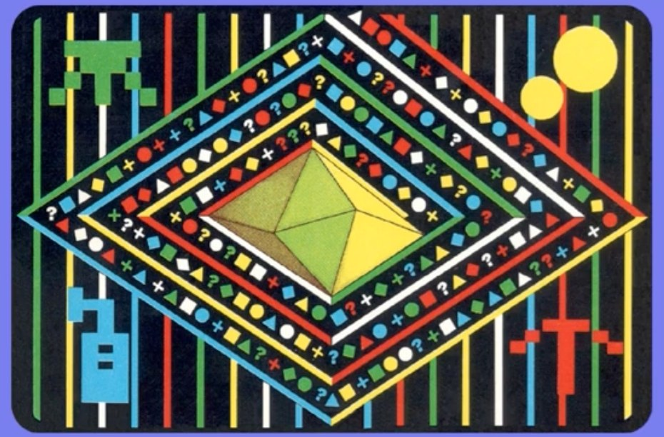

<meta charset="utf-8">
<meta name="viewport" content="width=device-width, initial-scale=1">
<title>Doctor Who and the Mines of Terror</title>
<link rel="preconnect" href="https://fonts.googleapis.com">
<link rel="stylesheet" href="https://fonts.googleapis.com/css2?family=Lato:wght@400;700;900&family=IBM+Plex+Mono:wght@400;500&display=swap">
<link rel="stylesheet" href="reference/dw-page.css">
<!-- tabs -->
<header class="hero">
  <p class="eyebrow">Commodore 64 · 1986 · Micro Power</p>
  <h1>Doctor Who and the Mines of Terror</h1>
  <p class="sub">How to finish the game: what to carry out, how to stop the machine, the two ways home, and the code lock.</p>
</header>
<main class="wrap">
<section id="solution">
  <p class="fig">Solution</p>
  <h2 class="t">Two ways out, and five ways to double the bonus</h2>
  <p class="lede">The game ends when the Doctor leaves the mine, by the escape pod or in the TARDIS. What he carries out, and whether he stopped the heatonite machine, decide the bonus (<a href="gameplay.html#end">Gameplay</a> has the table). Each <b>map</b> button opens the place on the <a href="levels.html">Maps</a> tab.</p>
  <h3>The steps</h3>
  <table class="t">
    <tr><th>Step</th><th>Where</th><th>How</th></tr>
    <tr id="step-splinx"><td>Keep Splinx</td><td><button class="b" type="button" data-go="SPLINX">map</button> beside the Doctor at the start</td><td>Splinx must be in the Doctor's hands or a pocket at the end (<code>$917F</code>). Following him out does not count.</td></tr>
    <tr id="step-crystal"><td>Take the CRYSTAL</td><td><button class="b" type="button" data-go="CRYSTAL">map</button> row 38, column 18</td><td>Held or pocketed at the end (<code>$916F</code>). The Master comes for the crystal, even from a pocket, and carries it away (<code>$B48A</code>), so the crystal needs watching once the Doctor has it.</td></tr>
    <tr id="step-capsule"><td>Take the CAPSULE</td><td><button class="b" type="button" data-go="CAPSULE">map</button> row 50, column 119, high on the right</td><td>Held or pocketed at the end (<code>$9177</code>).</td></tr>
    <tr id="step-machine"><td>Halt the heatonite machine</td><td><button class="b" type="button" data-go="MACHINERY: circuit slot 1">map</button> five slots at height <code>$0390</code>, columns 14 to 18</td><td>At the start five CIRCUITs sit in the five slots, their letters spell START, and the machine runs. Take out the A and the R in slots 3 and 4, and put in their place the O and the P found elsewhere: <button class="b" type="button" data-go="CIRCUIT (5 of 7)">map</button> and <button class="b" type="button" data-go="CIRCUIT (6 of 7)">map</button>. When slots 1 to 4 spell STOP (S <code>$40</code>, either T <code>$41</code> or <code>$4A</code>, O <code>$44</code>, P <code>$45</code>, the letters wanted at <code>$B989</code>), the machine stops and a sound plays (<code>machinery_update</code>, <code>$B9B6</code>, checked only in that part of the mine). Spelling START again starts it again (<code>$BA06</code>). At the end the Doctor must carry one of the CIRCUITs <code>$41</code>, <code>$42</code>, <code>$43</code>, or <code>$4A</code> for the halt to count (<code>$9190</code>-<code>$91A1</code>).</td></tr>
    <tr><td>Or flood the mine</td><td><button class="b" type="button" data-go="EXPLOSIVES blown here: the level starts rising">map</button> low on the right</td><td>The EXPLOSIVES blown at this point start a level rising, one step every 128 frames (<code>$C22B</code>). The rising level also counts as the machine halted at the end (<code>$91AB</code>), but the level kills the Doctor if it reaches him (<code>$C0C2</code>).</td></tr>
    <tr id="step-tardis"><td>Leave in the TARDIS</td><td><button class="b" type="button" data-go="TARDIS: the way home (empty hands)">map</button> row 28, column 114</td><td>With nothing in his hands, the Doctor presses F5 standing on the TARDIS (block <code>$B2</code>, <code>use_empty_hands</code>, <code>$BD1B</code>). The map has a TARDIS in two places. The one he lands in is removed as soon as he goes right of x <code>$0800</code> (<code>$BADD</code>), so the way home is the other one. This doubles the bonus once more.</td></tr>
    <tr id="step-pod"><td>Or the escape pod</td><td><button class="b" type="button" data-go="ACTIVATOR: escape pod">map</button> the top of the mine</td><td>Holding the <button class="b" type="button" data-go="ACTIVATOR">ACTIVATOR</button>, F5 at one of three points ends the game without the TARDIS doubling (<code>use_activator</code>, <code>$BCE0</code>).</td></tr>
  </table>
  <h3>What is in the way</h3>
  <table class="t">
    <tr><th>Obstacle</th><th>What gets past it</th></tr>
    <tr><td>Rock at three dig sites</td><td>The <button class="b" type="button" data-go="PICK AXE">PICK AXE</button>, three hits at each <button class="b" type="button" data-go="PICK AXE: dig here (3 hits) (1 of 3)">map</button></td></tr>
    <tr><td>Eight clamps on ladders high in the mine</td><td>The <button class="b" type="button" data-go="SPANNER">SPANNER</button> at each bolt <button class="b" type="button" data-go="SPANNER: bolt 1, opens a clamp">map</button></td></tr>
    <tr><td>Bad air in four blocks high in the mine</td><td>The <button class="b" type="button" data-go="AIR MASK">AIR MASK</button> held in the hand</td></tr>
    <tr><td>The security gate</td><td>Holding the <button class="b" type="button" data-go="PASS CARD">PASS CARD</button> sets the terrain class of character <code>$A0</code> to 0 instead of 1 (<code>$BB15</code>), which reads as the gate opening; no table gives the gate a place</td></tr>
    <tr><td>A wall</td><td>A blast at <button class="b" type="button" data-go="a blast here opens the wall">map</button> (<code>$C22E</code>); from the EXPLOSIVES or a DETONATOR, armed with F5</td></tr>
    <tr><td>The code lock</td><td>The code card; see <a href="#lock">the code lock</a> below</td></tr>
    <tr><td>The madrag, guarding the way to the AIR MASK</td><td>Splinx carrying off one of her eggs; see <a href="#madrag">past the madrag</a> below</td></tr>
    <tr><td>Controllers, stalagmites, falls, and the eggs</td><td>Kept away from; <a href="gameplay.html#dangers">Gameplay</a> covers each</td></tr>
  </table>
  <p class="cap">This route has not been played from start to finish.</p>
</section>
<section id="madrag">
  <p class="fig">The madrag</p>
  <h2 class="t">Past the madrag to the AIR MASK</h2>
  <p class="lede">The <button class="b" type="button" data-go="AIR MASK">AIR MASK</button> lies at the bottom of the mine, behind rock to the right of the madrag's nest. The madrag guards the nest, and she chases the Doctor when he comes within 160 pixels of her (<code>madrag_spot_doctor</code>, <code>$B933</code>).</p>
  <p>First the Doctor needs the <button class="b" type="button" data-go="PICK AXE">PICK AXE</button>, and the Rijans mining at the bottom left of the mine have it.<sup class="fn"><a href="about.html#src-9" title="Euan (unorig), the page's steward, from playing the game">9</a></sup> Three of them pass it from one to the next: a miner carries it home and puts it down there for a partner to collect (<code>trio_go_home</code>, <code>$C373</code>; <code>trio_state7_seek_obj34</code>, <code>$C30A</code>). The Doctor waits for one miner to put it down and takes it before the next one picks it up.</p>
  <p>Then the madrag needs a reason to leave. The Doctor throws a marker onto one of her <button class="b" type="button" data-go="EGG">eggs</button> with F7, so that he never goes near the egg himself, and drops a second marker by the ladder to the left. He climbs into place just above the madrag and programs Splinx: 1 GOTO MARKER, P PICK UP OBJECT, and 2 GOTO MARKER.</p>
  <p>When Splinx carries the egg away, the madrag goes after the robot cat to take the egg back (<code>$B752</code>). While she is away, the Doctor drops down, takes the PICK AXE in hand, breaks the rock at the two <button class="b" type="button" data-go="PICK AXE: dig here (3 hits) (1 of 3)">dig sites</button> there, and goes right to the mask.</p>
</section>
<section id="lock">
  <p class="fig">The code lock</p>
  <h2 class="t">A colour, a shape, a number, and the card in the box</h2>
  <p class="lede">Halfway up the mine is a panel that gives three clues, and below it three buttons that each show a shape. The answer is six shapes long, and the only way to find it is the code card that came with the game.</p>
  <figure class="shot" style="margin-top:0;margin-bottom:26px"><figcaption>The code card from the game's box. Its diamond bands hold the same list as the game: from the white triangle at the top corner, the outer band reads white triangle, red square, red circle, blue square, green triangle, red cross, white diamond, the first seven entries of the list at <code>$BD6F</code>.</figcaption></figure>
  <p>The Doctor works the lock with empty hands and F5 (<code>code_lock_press</code>, <code>$BE29</code>). Standing at the clue panel, each press shows the next clue: a number from 1 to 5, a shape, and a letter (<code>$BE6F</code>). The letters are W, R, B, G, and Y, which match white, red, blue, green, and yellow, the colours of the lines on the card. Standing at the buttons, he presses the one showing the next shape of the answer. One button always shows it and the other two show other shapes (<code>code_lock_deal_buttons</code>, <code>$BEEC</code>). A wrong press deals a whole new code with new clues (<code>$BED5</code>), so guessing gives a one-in-three chance six times running.</p>
  <p>The card is in the game too, as 186 bytes at <code>$BD6F</code>. Each byte is a coloured shape: eight times the colour plus the shape. To deal a code, the game takes three numbers from the frame counter (<code>code_lock_new_sequence</code>, <code>$BF69</code>), finds that colour and shape in the list, skips to the occurrence the number names, and reads six shapes from there (<code>$BFC7</code>). So the first shape of the answer is always the shape in the clue. The first empty-handed F5 of a game deals the first code (<code>$BB49</code>).</p>
  <div class="plate">
    <div class="row" id="lk-col"></div>
    <div class="row" id="lk-shp"></div>
    <div class="row" id="lk-num"></div>
    <div class="row"><button class="b" type="button" id="lk-deal">Deal a code</button><span class="note" id="lk-kv"></span></div>
    <canvas id="lk-ans" class="scr" role="img" aria-label="The six shapes of the answer"></canvas>
    <canvas id="lk-card" class="scr" style="margin-top:14px;max-width:100%" role="img" aria-label="The 186 coloured shapes of the code list, 31 to a row"></canvas>
    <p class="cap">Choose the three clues, or deal one the way the game does. The answer is read from the list at <code>code_lock_deck</code> (<code>$BD6F</code>-<code>$BE28</code>), drawn here 31 to a row, with the six shapes of the answer boxed. The shapes are the game's own characters: <code>$FD</code> <code>$FA</code> <code>$FE</code> <code>$FB</code> <code>$FC</code> <code>$FF</code> for shapes 0-5 (<code>$BD64</code>), <code>$F6</code> <code>$F5</code> <code>$F7</code> <code>$F8</code> <code>$F9</code> for the letters (<code>$BD5F</code>) and <code>$A1</code>-<code>$A5</code> for the numbers (<code>$BD6A</code>), from the graphics set the hand-over image holds.</p>
  </div>
  <p>The clues never show the sixth shape, but answers can contain it: the frame counter is reduced to 0-4 for each clue, and the list uses all six shapes. Every colour and shape the clues can show turns up at least five times, so every clue has an answer.</p>
  <p>Six right presses set the flag at <code>$4E</code>, play a sound, and redraw one block beside the buttons (switch cell 13: block <code>$C2</code> becomes <code>$D5</code>, <code>$BF59</code>). After that the buttons do nothing.</p>
  <div class="plate"><canvas id="lk-door" class="scr" style="max-width:100%" role="img" aria-label="The code lock's room before and after the code is entered"></canvas>
    <p class="cap">The room around the lock, row 38 to row 47, columns 77 to 85, before (left) and after (right) the code is entered. The clue panel is the framed door at the top; the buttons are drawn onto the screen while the Doctor is there and are not part of the map.</p></div>
</section>
</main>
<script src="../../lib/c64.js"></script>
<script src="reference/dw-page.js"></script>
<script>
(async function () {
  // each map button opens the Maps tab on the mark it names
  document.querySelectorAll('[data-go]').forEach(b => b.onclick = () => { location.href = 'levels.html?go=' + encodeURIComponent(b.dataset.go) + '#mine'; });
  let G; try { G = await DW.load(); } catch (e) { DW.fail(e); return; }
  const M = G.ram, full = DW.drawMine(M);
  lock(M, full);
  function lock(M, full) {
    const glyph = G.lockGlyphs, INK = [1, 2, 6, 5, 7];               // W R B G Y as C64 colours
    const SHAPE = Array.from(M.subarray(0xBD64, 0xBD6A)), LETTER = Array.from(M.subarray(0xBD5F, 0xBD64)), NUM = Array.from(M.subarray(0xBD6A, 0xBD6F));
    const DECK = Array.from(M.subarray(0xBD6F, 0xBD6F + 186));
    function put(ctx, ch, x, y, s, ink, bg) {
      ctx.fillStyle = C64.PAL[bg]; ctx.fillRect(x, y, 8 * s, 8 * s); ctx.fillStyle = C64.PAL[ink];
      glyph[ch].forEach((g, r) => { for (let b = 0; b < 8; b++) if (g & 0x80 >> b) ctx.fillRect(x + b * s, y + r * s, s, s); });
    }
    function chip(ch, ink) { const c = document.createElement('canvas'); c.width = c.height = 32; const x = c.getContext('2d'); x.fillStyle = '#000'; x.fillRect(0, 0, 32, 32); put(x, ch, 4, 4, 3, ink, 0); c.style.verticalAlign = 'middle'; return c; }
    let seed = [0, 0, 0];
    const groups = [['lk-col', 'Letter', LETTER, i => INK[i]], ['lk-shp', 'Shape', SHAPE.slice(0, 5), () => 1], ['lk-num', 'Number', NUM, () => 1]];
    groups.forEach(([id, label, chars, ink], g) => {
      const row = document.getElementById(id); row.insertAdjacentHTML('beforeend', '<span class="note" style="min-width:5em">' + label + '</span>');
      chars.forEach((ch, i) => { const b = document.createElement('button'); b.className = 'b'; b.type = 'button'; b.append(chip(ch, ink(i)));
        b.setAttribute('aria-label', label + ' ' + (i + 1)); b.onclick = () => { seed[g] = i; show(); }; row.append(b); });
    });
    function find() {                                                   // the dealer, $BFA1-$BFC5
      const want = 8 * seed[0] + seed[1]; let k = -1;
      for (let i = 0; i < DECK.length; i++) if (DECK[i] === want && ++k === seed[2]) return i;
      return -1;
    }
    const ans = document.getElementById('lk-ans'), actx = C64.canvas(ans, 6 * 40 + 8, 48);
    const card = document.getElementById('lk-card'), cctx = C64.canvas(card, 31 * 26 + 4, 6 * 26 + 4);
    function show() {
      groups.forEach(([id], g) => document.querySelectorAll('#' + id + ' button').forEach((b, i) => b.setAttribute('aria-pressed', i === seed[g])));
      const at = find(), code = DECK.slice(at, at + 6).map(v => v & 7);
      actx.fillStyle = '#000'; actx.fillRect(0, 0, ans.width, ans.height);
      code.forEach((v, i) => put(actx, SHAPE[v], 4 + i * 40, 6, 4, 1, 0));
      cctx.fillStyle = '#000'; cctx.fillRect(0, 0, card.width, card.height);
      DECK.forEach((v, i) => put(cctx, SHAPE[v & 7], 2 + (i % 31) * 26 + 1, 2 + (i / 31 | 0) * 26 + 1, 3, INK[v >> 3], 0));
      cctx.strokeStyle = '#fff'; cctx.lineWidth = 2;
      for (let i = at; i < at + 6; i++) cctx.strokeRect(2 + (i % 31) * 26, 2 + (i / 31 | 0) * 26, 26, 26);
      document.getElementById('lk-kv').textContent = 'Occurrence ' + (seed[2] + 1) + ' of that coloured shape is entry ' + at + ' of 186; press these six in order.';
    }
    document.getElementById('lk-deal').onclick = () => {                // seeds from the frame counter $53, as $BF6E-$BF9E
      const f = Math.random() * 256 | 0, m5 = v => v >= 5 ? v - 5 : v;
      seed = [m5(f & 7), m5(~f & 7), m5((f << 1 & 6) | f >> 7)];       // the third: ROL twice, the first ROL's carry is bit 7
      show();
    };
    show();
    // before and after: switch cell 13 (row 38, column 84) set to $D5
    const door = document.getElementById('lk-door'), dctx = C64.canvas(door, 2 * 9 * 32 + 16, 10 * 32);
    dctx.imageSmoothingEnabled = false;
    const crop = (src, x) => dctx.drawImage(src, 77 * 32, (55 - 47) * 32, 9 * 32, 10 * 32, x, 0, 9 * 32, 10 * 32);
    crop(full, 0);
    const cell = 0xFB80 - 0x80 * 38 + 84, was = M[cell]; M[cell] = 0xD5; const after = DW.drawMine(M); M[cell] = was;
    crop(after, 9 * 32 + 16);
  }
})();
</script>
